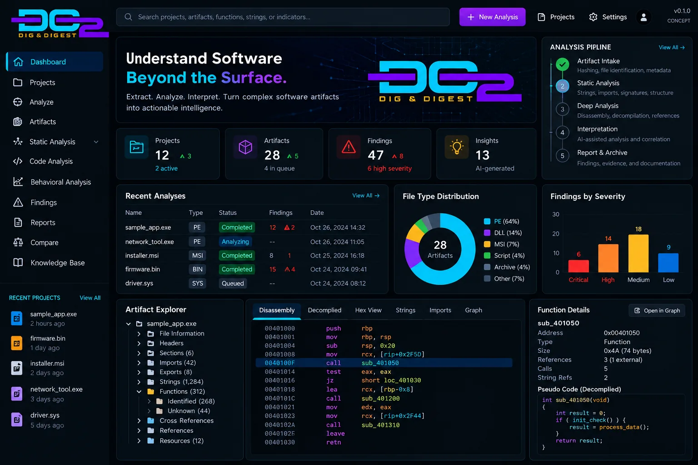

DO2
Understanding software beyond the surface. A proposed engineering workbench that examines software artifacts, organizes technical evidence, and makes complex findings easier to interpret.
Visualizing the DO2 Engineering Workbench.
This proposed interface explores how artifact intake, analysis progress, findings, and code-level investigation could come together in a single workspace. It is a design visualization—not a screenshot of a running DO2 application. All files, counts, charts, and code displayed in the mockup are illustrative.
- Type
- Windows desktop application (v0.2.0)
- Status
- Early working build: file ingestion, hashing and static analysis of executables and installers; end-to-end validation in progress
- My role
- Creator and technical lead; AI-assisted development
- Shows
- Software-analysis workflow design and systems-integration thinking

Project Visibility
Envisioned dashboard with analysis jobs, artifacts, findings, and workflow progress.
Artifact Workspace
Proposed navigation across file structure, extracted observations, and code-level views.
Evidence to Insight
Conceptual findings, severity summaries, and interpretation supported by traceable evidence.
Raw Technical Output Is Not the Same as Understanding.
Software inspection can produce fragmented metadata, identifiers, strings, dependencies, and structural observations. The challenge is connecting those details to a coherent, evidence-backed explanation without losing the underlying source context.
Complex Artifacts
Different formats and software components require careful identification and handling.
Disconnected Evidence
Individual observations are only useful when their origin, relationships, and limitations are clear.
Actionable Interpretation
Engineering findings should be searchable, reproducible, and understandable to the intended audience.
Two Disciplines. One Analysis Workflow.
DIG represents evidence collection and technical examination. DIGEST represents synthesis, interpretation, and reporting. This is a design objective, not a claim of implemented functionality.
Separate Collection, Analysis, and Interpretation.
The architecture is intentionally modular. It separates the user-facing workbench from processing services and evidence storage so components can be implemented, tested, and replaced independently.
Modular Components
Keep ingestion, analysis, persistence, and presentation separate to reduce coupling.
Traceable Output
Preserve hashes, source references, and job context so findings can be reviewed.
Controlled Analysis
Begin with authorized artifacts and static inspection rather than executing unknown binaries.
Design Decisions Before Feature Claims.
| Decision area | Proposed approach | Why it matters |
|---|---|---|
| Existing capabilities | Assess and reuse suitable components where practical. | Reduces unnecessary rewrites and exposes integration constraints early. |
| Analysis strategy | Start with repeatable, non-executing static inspection. | Produces testable findings while limiting exposure to untrusted code. |
| Interpretation | Require evidence links for derived conclusions. | Separates observation from inference and makes reports reviewable. |
| AI integration | Evaluate only after deterministic analysis is functional. | Prevents generated explanations from becoming the sole source of truth. |
| Deployment | Select runtime and storage after source audit. | Avoids presenting an unverified deployment plan as implemented. |
From Concept to Verified Engineering System.
The Process Is Part of the Project.
DO2 is intended to document architecture evaluation, software modernization, integration choices, debugging, testing, and technical communication—not just the eventual interface. As work progresses, this case study will distinguish proposed designs from verified implementations.